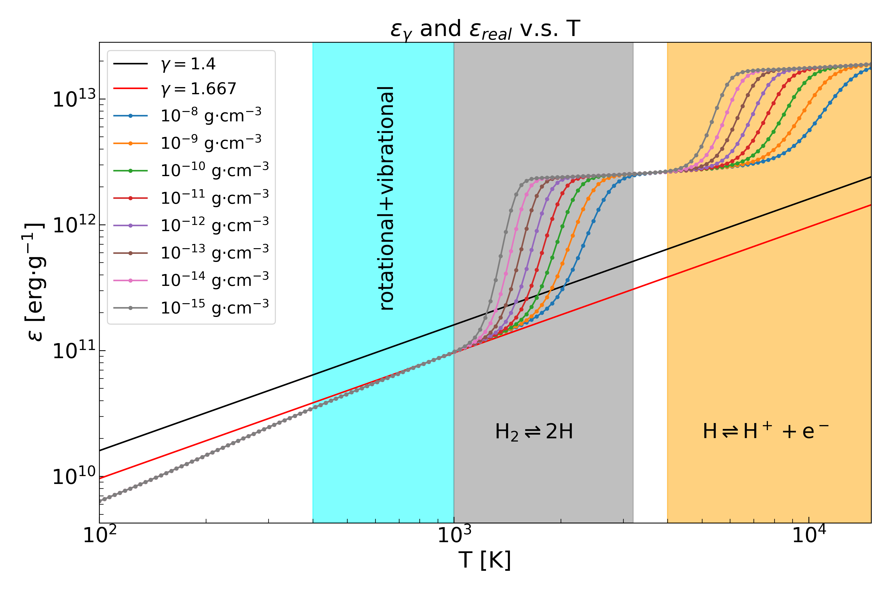
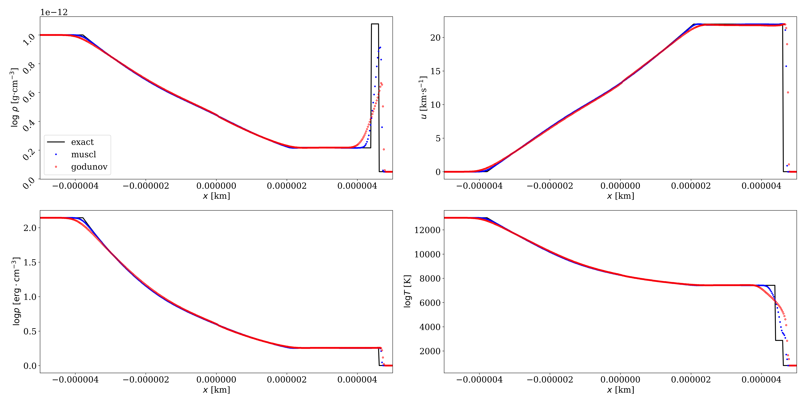

A 3D radiation-hydrodynamic AGB binary model (2019)
| The movie shows the density and optical depth evolution of the AGB binary with 5.4 AU separation. |
The origin of chemically peculiar stars and non-zero eccentricity in evolved close binaries have been long-standing problems in stellar evolution. Answers to these questions may trace back to an intense mass transfer phase, i.e., wind-Roche-lobe-overflow (WRLOF). Because WRLOF involves complex dust formation and (non-gray) radiation-hydrodynamics, the mass transfer efficiency $\beta$ and angular momentum loss efficiency $\gamma_{\rm am}$ are highly uncertain. Without accurate time-dependent knowledge of $\beta$ and $\gamma_{\rm am}$, the long-term orbital and chemical evolution cannot be known. In Chen, Ivanova, and Carroll-Nellenback (2019) hereafter CIC19, we put forward a 3D radiation-hydrodynamic AGB binary model. This work has a simplified dust formation and destruction model, and also consider cooling through various processes. We first studied the isolated AGB star behavior, then put it in a binary setup. The ray-tracing radiation transfer track the optical depth $\tau$ from a surface that encloses the AGB star in a spherical coordinate. The model is capable of predicting the formation of circumbinary disks, spiral outflow, and accretion disks in AGB binaries. It also establishes a strong connection between the presence of a circumbinary disk and a much higher than the simple model predicted accretion rate. We find that the formation of a circumbinary disk is a result of an increase in the optical depth in equatorial region. The secondary focuses AGB wind onto the equator, thus increase the optical depth. This phenomenon can be observed if non-local radiation transfer is considered. Full text can be found here
General equation of state Riemann solvers (2019)
|  |
| The specific internal energy of pure hydrogen gas of different density and perfect gases with constant $\gamma$s. The figure shows the temperature range of three phase transitions. |
{kind=link}
|  |
| A sod shock tube test of pure hydrogen gas. The black line is the exact solution, the red dots show the result of HLLC solver + analytic EoS solver + Godunov scheme and the blue dots show the result of HLLC solver + analytic EoS solver + MUSCL scheme. |
{kind=link}
Nowadays, people model many astrophysical problems with hydrodynamical approximation, and solve the problems with computational hydrodynamics. Among all the numerical hydrodynamical methods, Riemann solver is a widely used one in grid-based codes. In hydrodynamics, equation of state (EoS) is one of the equations that need to be solved. Much current research uses an EoS with a constant adiabatic index. This approximation may become questionable if phase transitions are important in astrophysical problems. The latent heat of the phases transitions maybe 10 times larger than the kinetic part of the internal energy. The first figure on the left shows the specific internal energy of pure hydrogen and perfect gas. In Chen et al. (2019), hereafter C19, we presented the first effective exact Riemann solver that can handle non-convex EoS. The EoS of pure hydrogen is non-convex because $\left(\pdv[2]{p}{\rho}\right)_{s}\ge0$ does not hold during hydrogen disassociation and ionization, where $s$ means the partial derivative is taken in constant specific entropy. An exact Riemann solver is important because it can gauge the approximate Riemann solvers that are used in codes. People use the approximate Riemann solvers instead of the exact ones in simulations because the approximate solvers are much cheaper. Therefore, C19 also presented an effective Harten-Lax-van Leer-Contact (HLLC) solver that can work with a general EoS in the Godunov scheme. The analytic hydrogen EoS solver in \citet{chen2019a} is both accurate and fast. Extension to include helium is straightforward. Full text can be found here